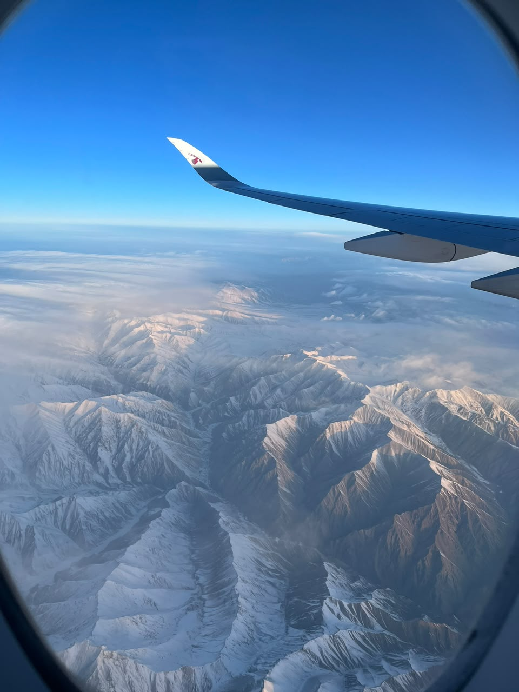
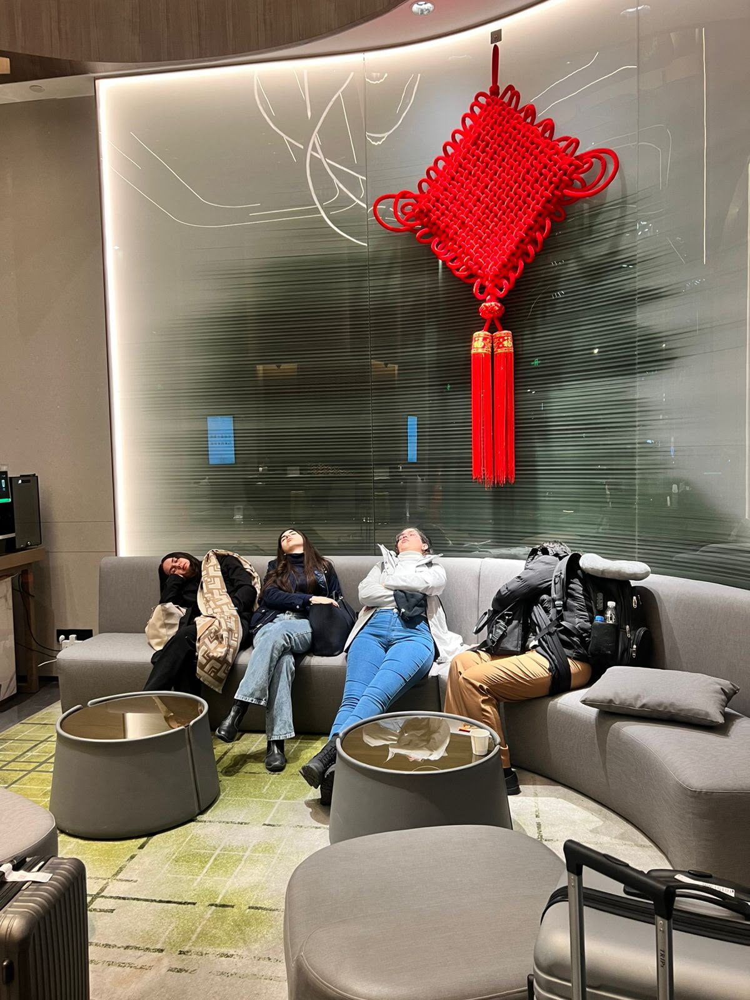
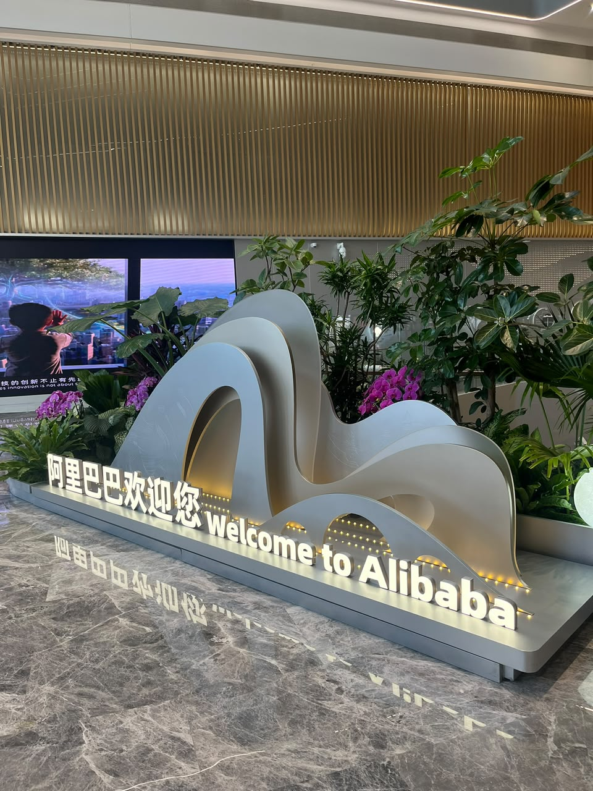
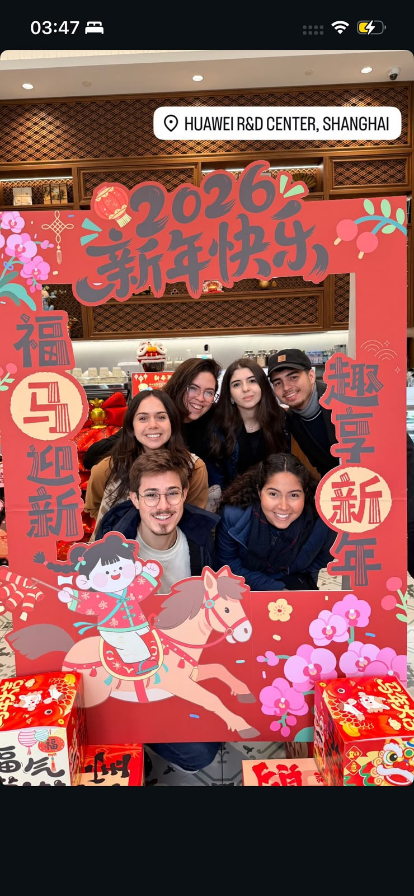
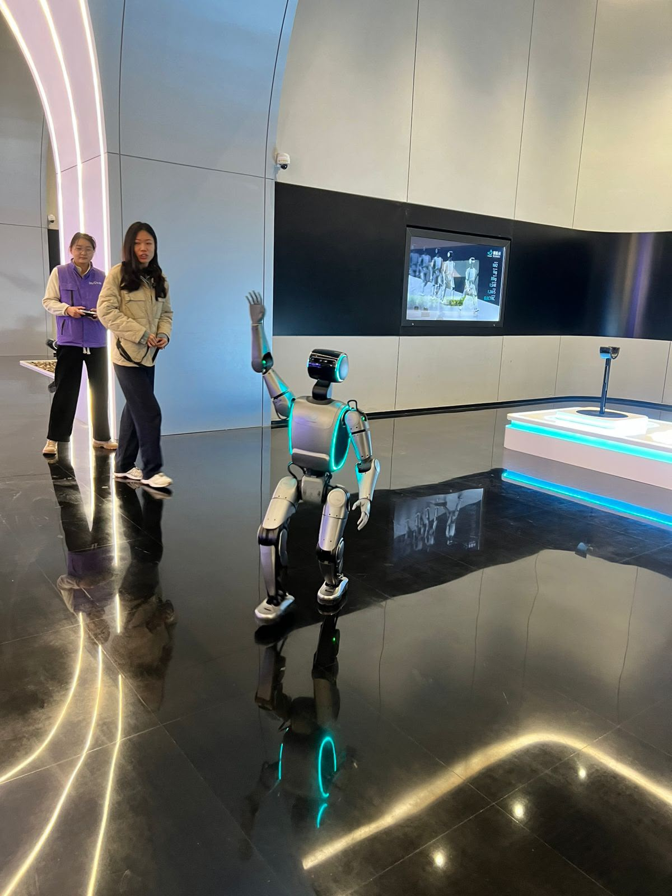
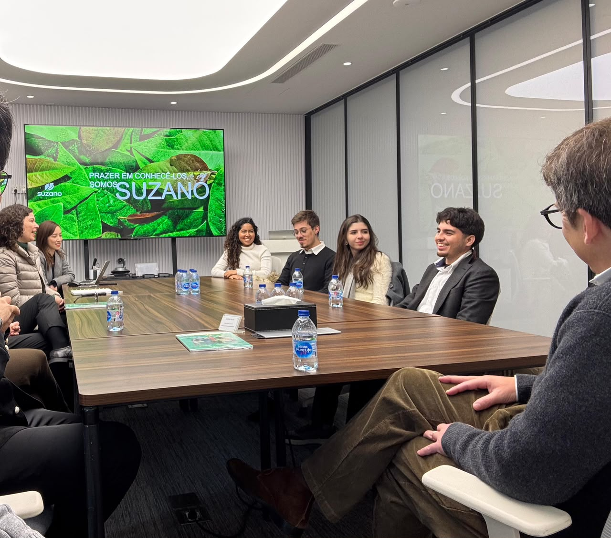
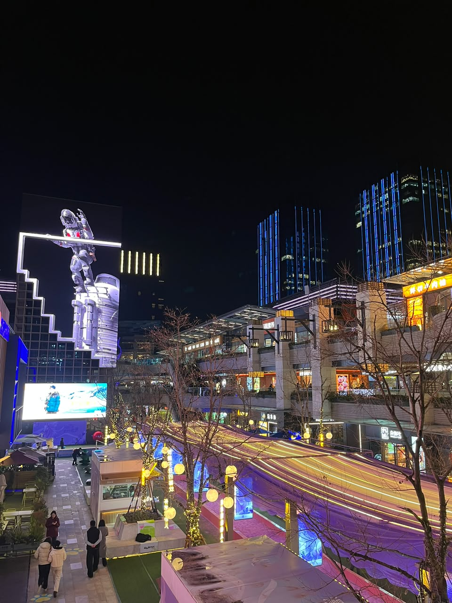

A week in China, with room to be surprised
Robots, breakfast noodles, a rainy night in Shanghai and learning to ask questions differently.

When I applied for the Prêmio Na Prática Protagonismo Universitário, I didn’t even think I would win. The trip to China was part of the prize. I tried to go without building up too many expectations, leaving room for whatever I would find. I’m really glad I did.
Twenty-five hours on the way
Our immersion took place from 25 to 31 January 2026, between Beijing and Shanghai. Before that, there were about twenty-five hours of travel. I kept taking pictures through the plane window: mountains, the Nile, places I was seeing from above for the first time.
We stopped in Doha, Qatar. The airport was enormous, with so much greenery inside that it felt like a forest. Even the stopover became part of the trip.




Our first dinner, around a round table
It was already dark when we arrived. The FGCI team, who organised the immersion, welcomed us with dinner at a traditional restaurant. We sat around a round table, getting to know each other and hearing about the week ahead. That was also the first time I ate shrimp. I loved it.
We had an interpreter throughout the visits. He was used to working with executives, investors and political delegations, and there he was, helping our group of students follow the conversations in real time. That support made such a difference.


Breakfast, visits, and very little energy left
Our days were intense. We had breakfast at the hotel and headed out for three or four visits a day. I was eating sushi and noodles for breakfast every day, which is a detail I don’t want to forget.
We wanted to film everything and share it on Instagram as we went. But by the end of the day we were exhausted. Sometimes there was barely any energy left to post. We were busy living through so much of what we wanted to show.



The visits where I wanted to look at everything
There were visits close to my world: hardware, robotics and the space sector, including SpaceSail. But much of the programme took me into other fields, from education to medicine, entrepreneurship and innovation hubs. We also visited Alibaba and Huawei. I loved having that mix.
We saw so many robots. One of them even drew Naryane! At WhalesBot, there were robotics kits and models that made me want to stop and look at every detail.
Another demonstration stayed with me: a little car on a track, presented as being controlled through signals picked up by a device worn on the head. Seeing that idea turned into something you could watch moving right there was so much fun.









A hospital, seen through its processes
At the hospital, what caught my attention was how they organised the flow of so many patients. The triage process we were shown was digital, and there was even something like a slide to move medicines. I kept looking at how those parts fitted together to make things move quickly.

Learning to notice the invisible rules
I had always thought good questions were open-ended ones, leaving room for the other person to express themselves. That had worked well for me in Brazil. During some of our visits in China, I tried the same approach and felt the conversation stall. When I started asking more direct, specific questions, the answers flowed better.
It wasn’t just about speaking another language. The setting, the way people showed respect and what each person expected from a conversation mattered too. This was something I noticed with the people we met, not a rule about everyone in a country.
At Suzano, a Brazilian company with a presence in China, we also had a session on negotiating with Chinese counterparts. It gave me more to think about alongside those conversations. Since then, when I enter a new environment, I try to notice its invisible rules before assuming that the way I already know will work there too.
I don’t want to turn that observation into a rule about an entire country. What I noticed was that, in those visits, more specific questions led to better conversations. It made me question a habit I had brought from home: assuming that what helped me communicate in one setting would work equally well in another.


Cold days and the Great Wall
It was really cold. Between all those visits, there was also time to see the Great Wall, walk around, do some shopping and enjoy being there together. Looking at the group’s photos brings back so many things that wouldn’t fit into a list of companies we visited.


Shanghai, in the rain
On our last night in Shanghai, we had dinner in a room reserved just for our group, with a view of the tower across the water. It was raining, and the city was all lit up. That is one of my favourite memories: the view, the food, being there with everyone.
I’m still in touch with people I met during that week, and we’ve even been talking about possible collaborations. The trip ended, but some of those conversations are still going.




I came home with far more questions than I had taken with me. I had gone looking forward to the technology, but I keep returning to those conversations where changing the question changed what I could learn. I want to carry that attention into other places too: observe, ask, and leave room to discover that my usual way of doing something may not be the only one that works.